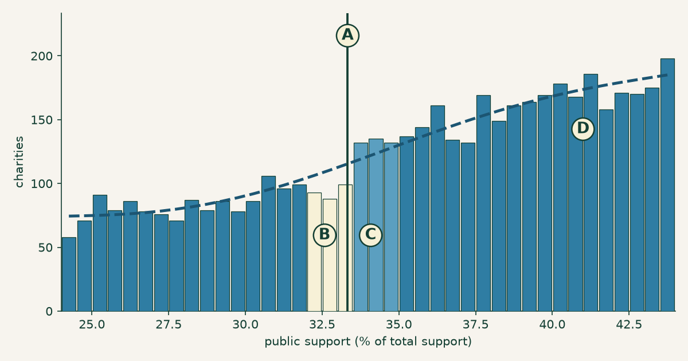
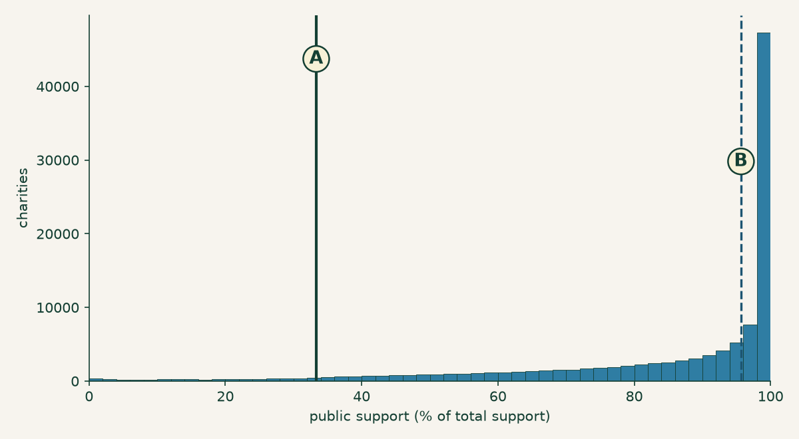
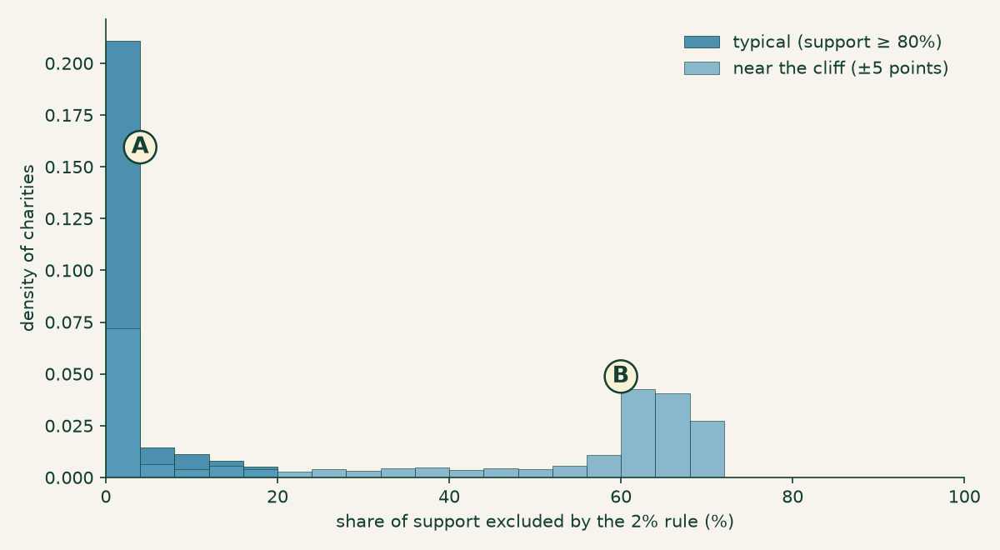
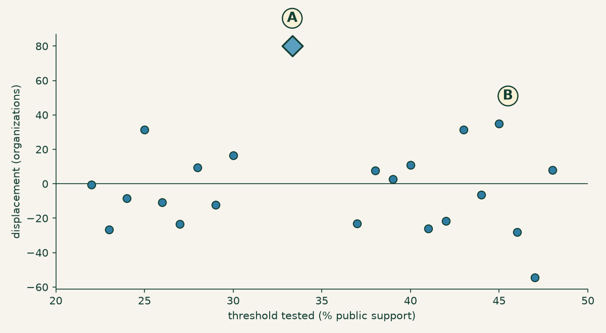

One-third: the cliff a few dozen charities steer around
Most tax rules are dials. You pay a little more, you deduct a little less, the consequence scales with the number. A few are not dials. A few are cliffs, where one side of a line means one thing and the other side means something else entirely, and the difference between 33.2 and 33.4 is the difference between two regimes.
The public support test is a cliff. Economists have a prediction about what people do at cliffs, and the prediction is testable, and the IRS publishes the data to test it with. This post runs the test. The answer is yes — measurably and robustly, though the effect is small: about one in seven of the organizations you would expect to find just below the line are not there (Figure 1).

Figure 1. The bend, which the rest of this post is about. Charities by public support, with A the one-third line and D a counterfactual density fitted to the neighbourhood excluding the shaded window. B, the bins in the 1.5 points below the line, sit under the counterfactual — 280 organizations where 331 were expected, a deficit of about 51. C, the bins just above, sit over it — 399 where 370 were expected, an excess of about 29. The two do not balance, and the text says why. The last bin below the line holds 99 charities; the first bin above holds 132. Same asset as the social card.
The rule
A charity that wants to be treated as a public charity rather than a private foundation generally has to show the public actually supports it. One of the routes — the one most donation-funded charities take — is the support test under §170(b)(1)(A)(vi): the organization must “receive at least one-third of its support from contributions from the general public,” a figure measured over a five-year period covering the current and four prior tax years.
Miss it and there is one more chance: the 10 percent facts-and-circumstances test, for organizations above 10 percent but below a third, which requires showing that “under all the facts and circumstances, it normally receives a substantial part of its support from governmental units or the general public.” Hold that phrase — it matters later. Miss both, and per the Schedule A instructions the organization “is a private foundation as of the beginning of the … tax year for filing purposes.”
That reclassification is not cosmetic. Private foundations pay an excise tax on net investment income, face a mandatory annual payout enforced by a 30 percent tax on income they fail to distribute, and — this is the one that stings — their donors generally deduct up to 30 percent of adjusted gross income instead of 50. The organization keeps doing exactly what it did the day before. Its donors just get a worse deal for doing it.
Though not every organization experiences that as a demotion. Private foundation status brings control — no need to court a broad donor base, no support test to pass every year — and some organizations would genuinely rather have it. The cliff is a cliff for charities that want to stay public charities, which is most of them but not all, and that is worth holding before reading any movement across the line as escape from a penalty.
So: a bright line, a real penalty, and a number every charity computes about itself. That is the setup for one of the most-studied phenomena in public economics — bunching. If a threshold matters, and people can see where they stand relative to it, the distribution around it stops being smooth. Organizations that would have landed just below turn up just above instead.
Almost nobody can see it
Before testing that, a deflating fact.

Figure 2. The cliff and the crowd. Public support for all 111,991 charities using this test: A marks the one-third line; B marks the median, at 95.7 percent. Almost the entire sector lives in the right-hand spike, several dozen points from the line that supposedly disciplines it.
This post looks at the 111,991 organizations that declare the §170(b)(1)(A)(vi) test on Schedule A and report a computable support ratio. The median one draws 95.7 percent of its support from the public. Only 4,323 of them — 3.86 percent — sit below the one-third line at all. Only 670, six-tenths of one percent, are within a point and a half of it.
For the overwhelming majority of American charities, the public support test is not a constraint. It is scenery. They clear it by sixty points without thinking about it, the way you clear a speed limit while parked.
Which means anything we find at the cliff is a fact about a very small neighbourhood — and Figure 2 is worth remembering when we get to the size of the effect.
It isn’t about being unpopular — it’s the 2 percent rule
Here is the part I did not expect, and the part worth a reader’s time even if bunching estimators leave them cold.
You would assume a charity near the one-third line is one the public doesn’t much support. Unloved, struggling to raise money. That is not what the data says, and Table 1 is the refutation. The near-cliff charities are not smaller in any way that explains their position — median revenue $387,204 against $662,907 for typical charities, the same order of magnitude, and they actually hold more assets ($1,266,282 against $829,810).
What separates them is who gave, not how much.
The support test does not count all contributions as public. Per the Schedule A instructions, when one donor’s gifts across the five-year window exceed 2 percent of total support, only the first 2 percent counts toward the public’s share; the excess is stripped out. And “one donor” is construed broadly — “all contributions made by a donor and by any person or persons standing in a relationship to the donor … will be treated as made by one person,” so a family or a related company cannot split a gift into smaller pieces.
The consequence is that the test measures breadth, not amount. A charity that raises $2 million from four devoted donors can fail it. A charity that raises $50,000 from six hundred people sails through. The rule is not asking how much you raised. It is asking how many people you raised it from.
And it asks that only about private money. The 2 percent cap does not apply to governmental units or to other publicly supported charities — their support counts in full. So a nonprofit funded almost entirely by one state agency clears the test comfortably, while one funded by four wealthy individuals does not. The concentration this rule punishes is concentration among private donors, specifically.

Figure 3. Where the cliff-dwellers come from. Share of support stripped out by the 2 percent rule: A, typical charities (support ≥ 80 percent), 86.0 percent of which have under 5 percent excluded; B, the second mode among near-cliff charities, half of which have 55–75 percent of their support excluded because it came from too few people.
| Near the cliff (±5 pt) | Typical (support ≥ 80%) | |
|---|---|---|
| Organizations | 2,308 | 80,940 |
| Under 5% of support excluded | 29.5% | 86.0% |
| 40% or more excluded | 55.7% | 4.1% |
| Median revenue | $387,204 | $662,907 |
| Median total assets | $1,266,282 | $829,810 |
Table 1. Near-cliff charities against typical ones. They are not smaller. They are narrowly funded: a majority have at least 40 percent of their support disqualified by the 2 percent rule, against a sector where seven-eighths have essentially none.
Across all 111,991 organizations, the correlation between public support and the share stripped by the 2 percent rule is −0.744. That is most of the story of who stands near the cliff.
But not all of it, and Figure 3 shows why. The near-cliff group is bimodal: 55.7 percent have 40 percent or more of their support excluded — the donor concentration story — while 29.5 percent have essentially nothing excluded. Those organizations are near the line for other reasons entirely: their total support includes large non-public components that dilute the ratio from the other direction. Donor concentration is the dominant mechanism near the cliff. It is not the only one, and the median of that bimodal group (53.9 percent) lands in a valley holding just 6.5 percent of it — a number describing almost no one, which is a mistake this series has written about and very nearly repeated here.
Do they steer?
Now the test. If the line changes behaviour, the distribution should be missing organizations just below it and carrying extra just above.
To say “missing” and “extra” you need a counterfactual: what would the neighbourhood look like if the line weren’t there? The standard approach (Code 1) is to fit a smooth curve to the density excluding a window around the threshold, and then ask that curve what the window should have held.
# Bin width, polynomial degree, window half-width.
# Frozen before the placebo test was run.
BW, DEG, W = 0.5, 5, 1.5
# Fit the density OUTSIDE a window around the line, then ask
# that curve what the window should have held.
excl = (mid > CLIFF - W) & (mid < CLIFF + W)
cf = np.polyval(np.polyfit(mid[~excl], cnt[~excl], DEG), mid)
displacement = (observed_above - cf_above) + (cf_below - observed_below)Code 1. The estimator, with its three arbitrary choices made in public: bin width, polynomial degree, and window. The full script is downloadable, and Table 2 reports what happens when the first two are changed.
That is the dashed curve in Figure 1, and the two shaded regions are the answer. Below the line, 280 organizations where the curve expects 331 — 15.5 percent missing. Above it, 399 where the curve expects 370 — 7.8 percent extra.
Both halves of the signature are there, and both matter. An excess above the line alone could be a lump of organizations that genuinely belong there. A deficit below paired with an excess above is displacement — the shape you get when organizations move across a line rather than pile onto it. Widen or narrow the window and it persists: a 16.3 percent deficit and 10.8 percent excess at ±1 point, 12.6 and 6.8 at ±2.
Be careful how those two halves get added up, because I originally added them wrong. The missing mass below is about 51 organizations. The excess above is about 29. It is tempting to sum them into a single headline — this post did, and called it “about 80 organizations” — but that double-counts: an organization that leaves the band below and arrives in the band above is counted once at each end. Eighty is not a number of charities. It is a test statistic, and a good one for reasons in the next section, but it is not a count.
The cleanest statement of the size is the deficit on its own. The counterfactual expects about 331 organizations in the point and a half below the line. There are 280. So 15.5 percent of the charities that should be sitting just below the one-third line are not there — roughly one in seven. That is the effect.
The two halves do not balance — 51 missing, 29 extra — and that gap is worth naming rather than smoothing over. If every departing organization landed in the 1.5 points just above, the two would be equal. They are not, which means either the movers land further up the scale than that window reaches, or the counterfactual is slightly off. The bunching literature has a fix for this, the integration constraint, which forces the fitted curve to preserve total mass. This analysis does not implement it. A curve that did would be the more faithful estimator, and its absence is the main methodological hole here.
One thing worth knowing before you decide how impressed to be. The ratio being bent here is not one year’s fundraising — it is a five-year aggregate, running a median 3.70 times a single year’s revenue. Whatever is happening, it is not a charity nudging one year’s books. It is a five-year total that ends up on the right side of a line.
Is it real?
Fifty missing charities out of 111,991 is a small deviation extracted from a wiggle in a curve, using a method with three arbitrary choices in it. Healthy scepticism says: you can find a wiggle anywhere if you look with a flexible enough curve.
Correct. So here is the check that matters, and it is the one that earns everything above — run the identical estimator at thresholds where no rule exists. If the method manufactures bumps out of noise, it will manufacture them at 27 percent and 41 percent too. Figure 4 runs it at 21 of them, scoring each with the same E+M statistic.

Figure 4. The test that earns the claim. Each point is the E+M statistic — a measure of asymmetry around a threshold, not a count of organizations. A is the real cliff at +80.1. B is the largest of 21 placebo thresholds from 22 to 48 percent, at +35.0. The placebos scatter around zero (mean −4.2); the real one does not sit among them.
The placebos average −4.2 with a standard deviation of 22.4. The real cliff is +80.1 — 3.77 standard deviations above the placebo distribution, and not one of the 21 reaches it. Bootstrapping the estimate over 400 resamples gives a 95 percent interval of [+28, +129], with zero of the 400 landing at or below nothing.
Two things about that statistic, both of which cut against a lazy reading of it.
First, why E+M rather than either half. It is not a count, as the last section said — so why score the placebos with it? Because it is the better test. The counterfactual enters the excess with a minus sign and the deficit with a plus, so a curve fitted slightly too high inflates the deficit and deflates the excess by the same amount, and the sum cancels that error out. You can watch it happen in the placebos: the two halves are negatively correlated (−0.445), and the standard deviation of their sum is 22.4 where independence would predict 30.0. That variance reduction is the whole reason the sum sees what the halves cannot.
Second, and less comfortably: neither half is individually decisive. Scored on its own against its own placebos, the excess above the line is 1.50 standard deviations out, with 2 of 21 placebos beating it. The deficit below is 2.45, with 1 of 21 beating it. Only the joint asymmetry clears the bar. That is legitimate — a joint test can reject where neither margin does, and this one is testing exactly the thing the theory predicts, a deficit paired with an excess — but it means the honest claim is narrower than “we found the bunchers.” The claim is that the density around the one-third line is asymmetric in the specific way displacement predicts, and that no fake threshold produces the same asymmetry. It is not that fifty organizations were caught in the act.
And because the specification is the obvious place to hide a thumb:
| Bin width | deg 3 | deg 4 | deg 5 | deg 6 |
|---|---|---|---|---|
| 0.25 pt | +95.4 | +93.0 | +86.5 | +85.8 |
| 0.5 pt | +88.9 | +87.0 | +80.1 | +79.7 |
| 1.0 pt | +56.9 | +46.9 | +48.5 | +47.7 |
Table 2. Every specification tried, not the flattering ones. All 12 give a positive displacement, from +46.9 to +95.4; the bolded cell is the one reported above. Coarse 1-point bins attenuate the estimate by roughly half — expected, since a 1.5-point window smeared across 1-point bins blurs the very thing being measured.
The reported specification (0.5-point bins, degree 5, ±1.5) was fixed before the placebo test was run, which is the only reason the placebo test means anything — choosing the specification after seeing which one maximises the answer is how you get a result that replicates in nobody else’s hands. The whole script is downloadable, including the figure code; the bootstrap seed is pinned so the interval above comes out the same on your machine. Disagree with the bandwidth, change it, and see what you get.
How big? It depends what you divide by
About fifty organizations are missing from below the line. Out of 111,991 charities, that is 0.046 percent — under five-hundredths of one percent. A rounding error. Nothing.
Except: how many charities could possibly respond to this line? From Figure 2, only 670 are within a point and a half of it. Everyone else is at 96 percent, sixty points clear, with nothing to respond to. And the right denominator is narrower still — the deficit is measured against the 331 organizations the counterfactual expects in the point and a half below the line, which is the only group that could go missing from it. Against that, fifty is 15.5 percent: about one in seven.
Same fifty organizations. Same data. One denominator says a rounding error, another says one in seven. This is the previous post in this series arriving somewhere new: the number was never the argument, the denominator was, and a statistic that won’t tell you what it divided by isn’t telling you anything. The honest sentence names both — about fifty organizations, which is one in seven of those the counterfactual puts within reach of the line.
There is a lesson in how this section originally read. It said “eighty organizations… a twelfth of those close enough,” which was wrong twice over: the numerator double-counted, and 670 was the wrong denominator for a deficit that can only be drawn from the 331 below. A post arguing that denominators are where the meaning hides should probably have checked its own.
What this does and does not show
Recall the second chance from the first section: a charity below one-third can still qualify under the facts-and-circumstances test, by showing that “under all the facts and circumstances, it normally receives a substantial part of its support” from the public. That test has a 10 percent floor. So the same rule contains a second threshold — and it is a threshold of a completely different kind. One-third is arithmetic: a charity computes it from its own books and knows exactly where it stands. The 10 percent floor gates a judgment, weighed by someone else, on the totality of the circumstances.
Run the same estimator at 10 percent and it returns +44.6 — which looks like something until you put it beside its own placebos. Fake thresholds at 5 and 6 percent return +45.5 and +38.5. The whole low-support region is noisy at this sample size, and the 10 percent estimate is 1.73 standard deviations out — indistinguishable from the noise around it. That is a null, and it should be read as one: not evidence that nobody responds to the facts-and-circumstances test, just an absence of evidence that they do.
With that caveat sitting in plain view, the inference this analysis supports is narrow and worth stating precisely. The response is concentrated at the threshold charities can calculate, and undetectable at the threshold that turns on someone else’s judgment. That is what you would expect if organizations are deliberately managing a number they can compute — you cannot aim at a facts-and-circumstances determination the way you can aim at a fraction. It is a reasonable conclusion from the way this analysis was carried out, and it is an inference, not an observation.
Now the limit, which deserves as much prominence as the finding. We do not observe the mechanism, and this data cannot identify it. At least four different processes produce exactly the signature in Figure 1:
- Broadening the donor base — an organization near the line recruits more small donors and crosses it. This is the rule doing precisely what it was written to do.
- Classification judgment — whether a grant comes from a governmental unit (counted in full), whether two gifts are one donor or two, whether a large gift qualifies as an excludable unusual grant. Real judgment calls, legally available, that move the ratio without moving a dollar.
- Timing — when a large gift lands inside a five-year window that rolls.
- Misreporting — the support figures simply being wrong.
Every one of them puts a deficit below the line and an excess above it. One year of as-filed aggregates, which is what this extract is, separates none of them. So this post is not in a position to tell you that charities are gaming the public support test, and it is not telling you that. It is equally not in a position to tell you the bunching is all benign donor-broadening — that would be just as much an assertion about a mechanism nobody here has measured. What would actually distinguish them: following the same organizations across filing years, and the Schedule B donor detail that says who gave what. Neither is in this file. Both exist.
What is left is a measurement, and it is a real one: at a line in the tax code where the arithmetic bites, the distribution of American charities has a bend in it, and the bend is not there at 27 percent or 41 percent. About fifty organizations — one in seven of those the counterfactual puts just below the line — are not where a smooth curve says they should be. Why they are not there is a question this data cannot answer, and you now have the same numbers I do: the script, the specification grid, the placebos, and the two halves of the statistic reported separately so you can judge the sum for yourself. Draw your own conclusion.
If you are looking at one specific organization rather than a hundred thousand, none of this transfers: an aggregate bend says nothing whatever about any individual charity, including one sitting at 34 percent. The search tools at noprofits.org and the ProPublica Nonprofit Explorer will show you its Schedule A, which is where its own answer lives.
This is a plain-language overview, not tax, legal, or financial advice. Figures are computed from the IRS SOI annual extract of Form 990 data (returns filed in calendar year 2024, mostly fiscal 2023), as-filed and unaudited; organizations filing the 990-EZ or 990-N are not included. The population is the 111,991 filers declaring the §170(b)(1)(A)(vi) test with a support ratio computable from the extract. The analysis script (calcs/public-support-cliff/ in this site’s repository) contains the full method, asserts every number in this post, and pins its random seed. The estimator has no integration constraint, so its counterfactual is not mass-preserving and the excess above the line does not balance the deficit below; a mass-preserving counterfactual, as used in the bunching literature, would be the more faithful estimator. The E+M statistic used to score the placebos is a measure of asymmetry, not a count of organizations, and neither of its halves is individually significant. The population is a single filing year and only those organizations declaring the §170(b)(1)(A)(vi) test — not the 990-EZ/990-N filers, nor those using other public-charity tests — and the figures here have not been reconciled against the IRS’s own published SOI tables. The bunching estimate is an aggregate statistical result and is not evidence of wrongdoing by any organization; as described above, this analysis cannot identify the mechanism behind it and makes no claim about any individual filer.